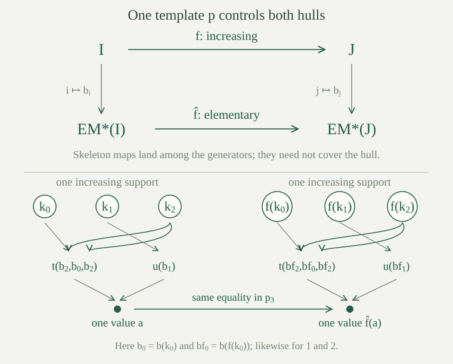

Let \(T\) be a theory in a set-sized language \(L\), and choose an infinite model \(M\models T\). We work classically with choice. Start with \(L_0=L\) and \(M_0=M\). Having defined \(L_n\) and its expansion \(M_n\) on this same carrier, add a fresh function symbol \(s_\varphi\) of arity \(r\) for every \(L_n\)-formula \(\varphi(y,\bar x)\), where \(\bar x\) is a specified finite list of \(r\) variables.
Choose its interpretation so that
When there is no witness, give the function a fixed value \(m_*\in M\). This is the witness-function construction, now applied to every formula at the stage. Empty parameter lists give nullary functions, hence new constants. Keep all existing interpretations when forming \(L_{n+1}\) and \(M_{n+1}\).
The fully Skolemized language for this construction is \(L^*=\bigcup_{n<\omega}L_n\), with the compatible expansion \(M^*\). Every formula of \(L^*\) uses finitely many symbols, so belongs to some \(L_n\); its witness function appears at the following stage. Thus \(M^*\) satisfies the Skolem witness axioms
for every \(L^*\)-formula \(\varphi\). Here \(s_\varphi\) denotes a function supplied at a stage where that formula is present. The iterative step matters: formulas involving newly added functions are not among the original \(L\)-formulas.
Write \(T^*=\operatorname{Th}(M^*)\), the complete theory of this chosen expansion. It contains every witness axiom, and its \(L\)-reduct theory contains \(T\). Neither the chosen functions nor the complete expansion theory need be uniquely determined by \(T\).
Put \(\lambda=\max(|L|,\aleph_0)\), where \(|L|\) counts all original nonlogical symbols. The language \(L^*\) above has at most \(\lambda\) symbols, and at most \(\lambda\) formulas.
A language with at most the infinite cardinal \(\lambda\) symbols has at most \(\lambda\) formulas, since they are finite strings over an alphabet of that size. This is the formula-counting bound. At each stage we add at most one symbol for each formula and finite variable list, so at most \(\lambda\) symbols are added.
Induction gives \(|L_n|\le\lambda\). The union of countably many sets of size at most \(\lambda\) still has size at most \(\lambda\): code a symbol by a stage and its index, and use \(\aleph_0\cdot\lambda=\lambda\), an instance of infinite cardinal multiplication. The same finite-string count applies to \(L^*\).
Let \(N^*\models T^*\), and let \(B=\{b_i:i\in I\}\) be a nonempty family of its elements. Its Skolem hull \(H^*=\operatorname{Hull}^{N^*}(B)\) is the \(L^*\)-substructure generated by \(B\). Its elements are exactly the values
of finite \(L^*\)-terms at finite lists from \(B\), allowing repeated indices and empty lists. In particular, all original and added constants belong to the hull. The term characterization and minimality are the generated-substructure facts.
The indexed generating family is called the skeleton. This name records a distinguished family of generators; it does not assert that every point of the hull is a skeleton point.
For every \(N^*\models T^*\) and nonempty skeleton \(B\), its Skolem hull satisfies \(H^*\preccurlyeq N^*\). Consequently the reduct \(H=H^*\!\upharpoonright L\) is a model of \(T\).
Take an \(L^*\)-formula \(\exists y\,\varphi(y,\bar a)\) true in \(N^*\), with parameters \(\bar a\) in \(H^*\). Some finite stage contains the entire formula, so a witness function \(s_\varphi\) was added at the next stage. Its witness axiom belongs to \(T^*\) and therefore holds in \(N^*\). It supplies the particular witness \(s_\varphi^{N^*}(\bar a)\).
The hull is closed under every \(L^*\)-function, so this witness belongs to \(H^*\). The Tarski–Vaught criterion makes the inclusion elementary. This applies to formulas involving added functions as well as original symbols. Truth of \(L\)-formulas is unchanged by taking reducts, so the reduct of the hull satisfies every sentence of \(T\).
Choose distinct elements \(a_0,a_1,\ldots\) of \(M^*\), possible by choice since its carrier is infinite. Apply the indiscernible-extension theorem in the full language \(L^*\), over the empty parameter set, with index order \(\omega\). It gives distinct indiscernibles \((c_i)_{i\in\omega}\) in an elementary extension \(C^*\) of \(M^*\).
For each \(n\ge1\), let \(p_n(x_0,\ldots,x_{n-1})\) be the complete type of any increasing \(n\)-selection from this sequence. Indiscernibility makes this independent of the selected indices. Put \(p_0=\operatorname{Th}(C^*)=T^*\). The resulting Ehrenfeucht–Mostowski template is \(p=(p_n)_{n<\omega}\).
These types are coherent under increasing restriction: if \(0\le j_0<\cdots<j_{r-1}<n\), the type \(p_n\), restricted to those coordinates, is \(p_r\). To see this, evaluate the restricted formula on an increasing \(n\)-tuple from the sequence; its selected coordinates are an increasing \(r\)-tuple. The definition of \(p_r\) gives exactly the same truth value. For \(r=0\), this is agreement with the sentence theory \(T^*\).
In particular \(p_2\) contains \(x_0\ne x_1\). This one template is fixed before choosing any new index order.
For every infinite linear order \(I\), there is \(N_I^*\models T^*\) with a distinct skeleton \((b_i^I)_{i\in I}\) such that every increasing \(n\)-selection has complete \(L^*\)-type \(p_n\).
Add fresh constants \(d_i\), \(i\in I\), and impose \(T^*\), together with
For a finite fragment, choose one displayed origin for each selected type sentence, retaining its finite list of index labels even if some variables of its formula are unused. There are only finitely many labels in these lists. Order them increasingly and map them, in order, to the same number of natural-number indices. Interpret the corresponding \(d_i\) by those \(c_j\) in \(C^*\). Every selected type sentence is true by the definition of \(p_n\), and \(C^*\models T^*\). Assign the remaining names arbitrary values. This satisfies the fragment.
Compactness gives a model of the whole theory; use its reduct as \(N_I^*\) and its actual constant values as \(b_i^I\). Every formula or its negation belongs to \(p_n\), so the increasing selections have exactly that type, not just a subset of it. The inequality in \(p_2\) makes the skeleton distinct. Thus all index orders use precisely the fixed template.
For a model and skeleton realizing \(p\) on \(I\), define the Ehrenfeucht–Mostowski hull
By , the expanded hull is elementary in \(N_I^*\), and its reduct models \(T\). Its skeleton is indiscernible in \(L^*\), because all increasing selections have their stipulated types and elementarity retains every formula at those points.
The notation permits choosing a realizing model and hull separately for each \(I\). The conclusions below compare any such choices for this same \(p\); they do not require a single choice function on a proper class of orders.
Let \(f:I\to J\) be a strictly increasing map between infinite linear orders. For hulls built from this same template, the proposed map induced by \(f\) is
The term may involve any original or Skolem symbols; the indices in a presentation may repeat and need not be increasing. The formula specifies the image of every hull element, but different terms can represent the same element. Well-definedness is the next assertion, not an assumption.
The displayed rule defines a unique injective function \(\widehat f:\operatorname{EM}^*(I)\to\operatorname{EM}^*(J)\), and sends each skeleton point \(b_i^I\) to exactly \(b_{f(i)}^J\).
Suppose two term presentations use the finite index lists \(\bar i,\bar j\). Collect their union of index values and write it as a strictly increasing list \(k_0<\cdots<k_{s-1}\). Rewrite both terms as \(t'(\bar x)\) and \(u'(\bar x)\) in this common list of variables, repeating variables as the original presentations require.
The equality \(t'(\bar x)=u'(\bar x)\) belongs to \(p_s\) exactly when the two presented values in the \(I\)-hull are equal. Because \(f\) is strictly increasing, the list \(f(k_0)<\cdots<f(k_{s-1})\) has the same template type \(p_s\). Thus the two image values are equal if and only if the original values are equal.
The forward implication makes the rule independent of every choice of presentation. The reverse implication makes the resulting function injective. For presentations with no indices, use the sentence theory \(p_0=T^*\). A variable term gives the prescribed value on each \(b_i^I\), and the rule for all term values determines the function uniquely.

For hulls realizing the same fixed template \(p\), every strictly increasing \(f:I\to J\) induces the particular elementary embedding \(\widehat f:\operatorname{EM}^*(I)\to\operatorname{EM}^*(J)\) given by the term rule. Its \(L\)-reduct is elementary as well.
Take any \(L^*\)-formula \(\psi(z_0,\ldots,z_{r-1})\) and any tuple \(\bar a\) from the source hull. Present each \(a_\ell\) by a term in finitely many skeleton points. Gather all indices used into one increasing list \(\bar k\), and rewrite the presentations as terms \(t_\ell(\bar x)\) in its variables.
By semantic substitution, the truth of \(\psi[\bar a]\) in \(N_I^*\) is the truth of the single formula \(\psi(t_0(\bar x),\ldots,t_{r-1}(\bar x))\) at \(\bar b_{\bar k}^I\). In \(N_J^*\), the corresponding formula at \(\bar b_{f(\bar k)}^J\) expresses exactly \(\psi[\widehat f(\bar a)]\), by the prescribed term rule.
The two increasing skeleton lists have the same type \(p_{|\bar k|}\), so these truth values agree. If the support is empty, use \(p_0\). Both hulls are elementary in their ambient structures by , so agreement in the ambient structures gives agreement in the hulls themselves. This proves preservation and reflection of every formula for the specified \(\widehat f\). Restricting to \(L\)-formulas proves the reduct assertion.
For fixed chosen hulls from \(p\), the induced maps satisfy \(\widehat{\operatorname{id}_I}=\operatorname{id}_{\operatorname{EM}^*(I)}\) and \(\widehat{g\circ f}=\widehat g\circ\widehat f\). Consequently an order automorphism \(f:I\to I\) induces an automorphism of the expanded hull, and hence of its reduct.
Every hull point is a term in finitely many skeleton entries. On such a value, the identity rule leaves all indices unchanged. Applying \(\widehat f\) and then \(\widehat g\) replaces each index \(i\) first by \(f(i)\), then by \(g(f(i))\), exactly the rule for \(g\circ f\). Thus the equalities hold on every point.
If \(f\) is an order automorphism, apply the construction to its increasing inverse. The two composition identities give \(\widehat{f^{-1}}\circ\widehat f=\operatorname{id}\) and \(\widehat f\circ\widehat{f^{-1}}=\operatorname{id}\). Hence the elementary map is bijective with the specified inverse, so is an automorphism. This proves surjectivity as well as elementary preservation.
If \(T\) has an infinite model, there are a set-sized fully Skolemized expansion \(L^*\) and one coherent template \(p\) such that every infinite linear order \(I\) has a hull \(\operatorname{EM}(I)\models T\) with distinct skeleton indexed by \(I\). For any two chosen hulls from this template, increasing index maps induce the elementary maps above. With \(\lambda=\max(|L|,\aleph_0)\),
In particular, for countable \(L\), the reduct has exactly \(|I|\) elements.
The fully Skolemized expansion and the template were constructed before \(I\) was chosen. The stretching lemma gives a realizing skeleton for each \(I\); its hull models \(T\). The term-map theorem compares any pair of these realizations through their common complete types.
The distinct skeleton gives the lower bound. For the upper bound, each hull point has a finite term presentation using symbols from \(L^*\) and finitely many indices from \(I\). Put \(\kappa=\max(|I|,\lambda)\). The presentation alphabet has size at most \(\kappa\), an infinite cardinal. There are at most \(\kappa\) finite strings: finite powers have size at most \(\kappa\), and a countable union of these sets has size at most \(\kappa\). Evaluation is onto the hull, so its cardinality is at most \(\kappa\). Reducts keep the carrier. If \(L\) is countable and \(I\) infinite, then \(\kappa=|I|\), and the two bounds agree.
Suppose two indiscernible skeletons were constructed independently in models of the same theory \(T\). Does an increasing map between their index orders automatically extend by the term rule to an elementary map?
No. In the language with a unary predicate \(P\), take \(T\) to be empty. One infinite structure can have \(P\) true everywhere, and another can have \(P\) false everywhere. In each structure a distinct sequence is indiscernible over the empty set: after replacing each \(P\)-atom by its constant truth value, formulas reduce to equality, and infinite-equality quantifier elimination applies.
Even the identity map between two \(\omega\)-index orders cannot send the first skeleton to the second by an elementary map, since \(P\) would change truth on each generator. Their one-types differ. The construction above first fixes a single template in the expanded language; equality and all substituted formulas then have exactly the same truth values in the hulls being compared. Merely satisfying the original \(T\) supplies no such agreement.
In the equality-only language, what is the ordinary substructure generated by a nonempty set \(B\)? Does the same answer necessarily hold for the full Skolem hull in the expanded language?
In the original equality language there are no functions or constants to add points, so the generated substructure is exactly \(B\). If \(B\) is infinite, it is also elementary in any containing infinite equality structure, by quantifier elimination.
The full Skolem hull uses a larger language and can contain additional points. Its Skolemization has a constant \(d\) witnessing \(\exists y(y=y)\). An infinite distinct sequence indiscernible in that language cannot contain \(d\): if \(b_i=d\), indiscernibility for the formula \(x=d\) would force every entry to equal \(d\), contradicting distinctness. Yet every substructure of the expanded language, including the Skolem hull, must contain \(d\). Thus in this construction the full hull strictly contains its skeleton, even though the original-language generated substructure is just the skeleton.
Apply the construction to dense linear orders without endpoints in the countable order language. Compare index orders \(\omega\) and \((\mathbb Q,<)\). Must their resulting \(L\)-reducts be nonisomorphic?
No. Both index sets are countably infinite, so both reducts are countably infinite models of the dense-order theory. The countable dense-order isomorphism theorem makes the reducts isomorphic.
The index orders themselves are not isomorphic: \(\omega\) has a least point and \(\mathbb Q\) has none. There is no contradiction. The isomorphism of reducts need not carry one distinguished skeleton to the other or preserve the extra Skolem symbols. The theorem gives model construction and elementary maps along increasing index maps; it does not recover an arbitrary index order from the unexpanded model.